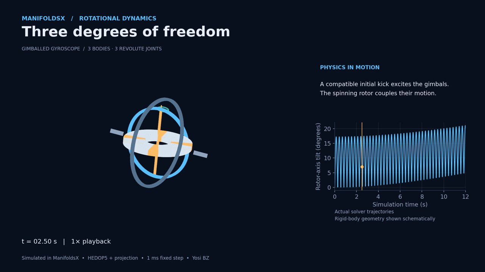

Three studies in rotational dynamics
A spinning rotor couples two gimbals. A top precesses under gravity. A free body flips without an applied torque. All three are compared with analytical solutions.

The models, calculations and checks behind the animations.
A spinning rotor couples two gimbals. A top precesses under gravity. A free body flips without an applied torque. All three are compared with analytical solutions.

Platform errors and run times for a driven two-stage mechanism, for ManifoldsX and MuJoCo, checked against exact forward kinematics.
How motion and joint loads change with spring and bushing parameters, and how the derivatives were checked against independent simulations.
Suggestions for analytical checks and difficult mechanisms are welcome.
manifoldsx.eng@gmail.com